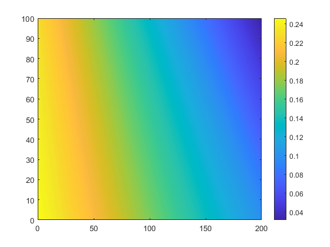
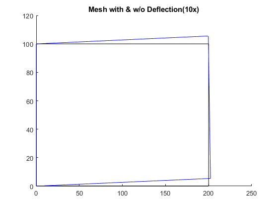

clear
ele_X_coord = [0 200 200 0];
ele_Y_coord = [0 0 100 100];
ele_nodes = [1 2 3 4];
KE = stiffness(ele_X_coord,ele_Y_coord);
F = sparse(8,1); U = zeros(8,1);
F(5) = 10/sqrt(2);
F(6) = 10/sqrt(2);
fixeddofs = [1 2 7 8];
alldofs = 1:8;
freedofs = setdiff(alldofs,fixeddofs);
U(freedofs,:) = KE(freedofs,freedofs) \ F(freedofs,:);
U(fixeddofs,:)= 0;
X = [0,200;0,200];
Y = [0 0;100 100];
dx = [U(1) U(3); U(7) U(5)];
dy = [U(2) U(4); U(8) U(6)];
X_mod = X + 10*dx;
Y_mod = Y + 10*dy;
stress_vm = stress(ele_X_coord,ele_Y_coord,U);
figure(1)
contourf(X, Y,[stress_vm(1) stress_vm(2);stress_vm(3) stress_vm(4)],100,'edgecolor', 'none')
colorbar()
figure(2)
hold on
for i = 1:2
plot(X(i,:),Y(i,:),'k')
plot(X_mod(i,:),Y_mod(i,:),'b')
end
plot(X,Y,'k')
plot(X_mod,Y_mod,'b')
title('Mesh with & w/o Deflection(10x)')
hold off
function stress_vm = stress(X,Y,Q)
E = 120;
nu = 0.25;
D = (E/((1+nu)*(1-2*nu)))*[1-nu nu 0; nu 1-nu 0;0 0 0.5-nu];
coord = [X',Y'];
stress_temp = [];
for i = 1:2
for j = 1:2
eta = (2*i-3);
zeta = (2*j-3);
J = (1/4)*[eta-1 1-eta 1+eta -eta-1; zeta-1 -zeta-1 1+zeta 1-zeta]*coord;
H = (1/4)*[eta-1 1-eta 1+eta -eta-1; zeta-1 -zeta-1 1+zeta 1-zeta];
H = J\H;
H = [H(1,1) 0 H(1,2) 0 H(1,3) 0 H(1,4) 0; 0 H(2,1) 0 H(2,2) 0 H(2,3) 0 H(2,4); H(2,1) H(1,1) H(2,2) H(1,2) H(2,3) H(1,3) H(2,4) H(1,4)];
stress_temp = [stress_temp D*H*Q];
end
end
stress_xx = stress_temp(1,:);
stress_yy = stress_temp(2,:);
stress_xy = stress_temp(3,:);
stress_vm = sqrt((stress_xx.^2 + stress_yy.^2)*(1 + nu^2 - nu) + 3*stress_xy.^2 - stress_xx.*stress_yy*(1 - 2*nu^2 + 2*nu));
end
function K = stiffness(X,Y)
E = 120;
nu = 0.25;
D = (E/((1+nu)*(1-2*nu)))*[1-nu nu 0; nu 1-nu 0;0 0 0.5-nu];
coord = [X',Y'];
K = zeros(8,8);
for i = 1:2
for j = 1:2
eta = (2*i-3)/sqrt(3);
zeta = (2*j-3)/sqrt(3);
J = (1/4)*[eta-1 1-eta 1+eta -eta-1; zeta-1 -zeta-1 1+zeta 1-zeta]*coord;
H = (1/4)*[eta-1 1-eta 1+eta -eta-1; zeta-1 -zeta-1 1+zeta 1-zeta];
H = J\H;
H = [H(1,1) 0 H(1,2) 0 H(1,3) 0 H(1,4) 0; 0 H(2,1) 0 H(2,2) 0 H(2,3) 0 H(2,4); H(2,1) H(1,1) H(2,2) H(1,2) H(2,3) H(1,3) H(2,4) H(1,4)];
K = K + det(J)*H'*D*H;
end
end
end
 